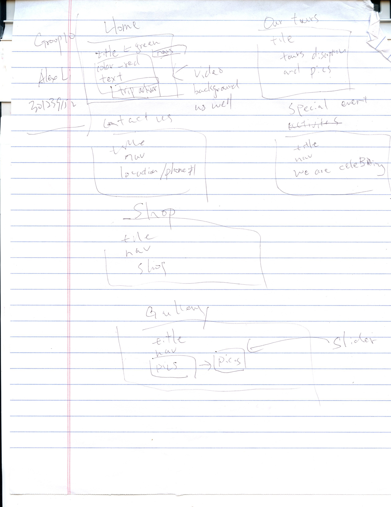
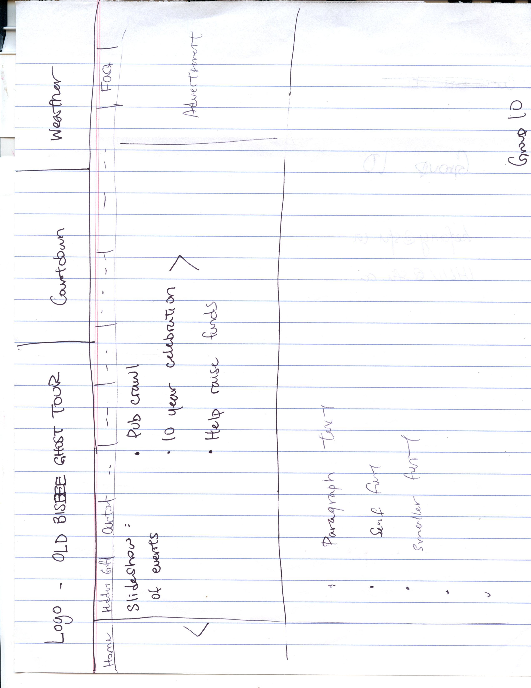

On Jan. 18th, I was assigned to redesign this website. Below are my final products.

This is my sketch initially drawn on Jan 18th. The final implementation is not too different from the sketch, agreed?

This is our final sketch. The final implementation is not too different either, right?